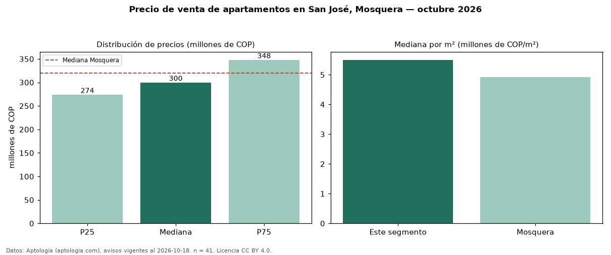

Precio de venta de apartamentos en San José, Mosquera — octubre 2026
Con 41 avisos vigentes, el precio mediano de apartamentos en venta en San José, Mosquera es COP 300 millones. Eso es 6 % por debajo de la mediana de Mosquera para apartamentos (COP 320 millones). Por metro cuadrado, la mediana es COP 5,50 millones/m² (n = 41 avisos con área), 12 % por encima de Mosquera (COP 4,93 millones/m²). El área mediana anunciada es 55 m². El segmento con más oferta es el de 3 o más habitaciones (38 avisos, mediana COP 306 millones). La administración mediana declarada es COP 260.000 al mes (n = 29). El estrato más frecuente es 4 (88 % de los avisos con estrato). La mitad central de los avisos va de COP 274 millones a COP 348 millones (razón 1,3), una dispersión baja. Datos: Aptología (aptologia.com), CC BY 4.0 — https://www.aptologia.com/venta/mosquera/san-jose. Archivos: PDF, CSV con las cifras y gráfica PNG.

| Avisos únicos | 41 |
|---|---|
| Percentil 25 | COP 274.000.000 |
| Mediana | COP 300.000.000 |
| Percentil 75 | COP 348.000.000 |
| Mediana por m² | COP 5.500.000 |
Fuente: avisos vigentes de portales inmobiliarios recopilados por Aptología, deduplicados (mínimo 30 avisos únicos por celda). Precios pedidos, no cerrados. Fecha: 2026-10-18.